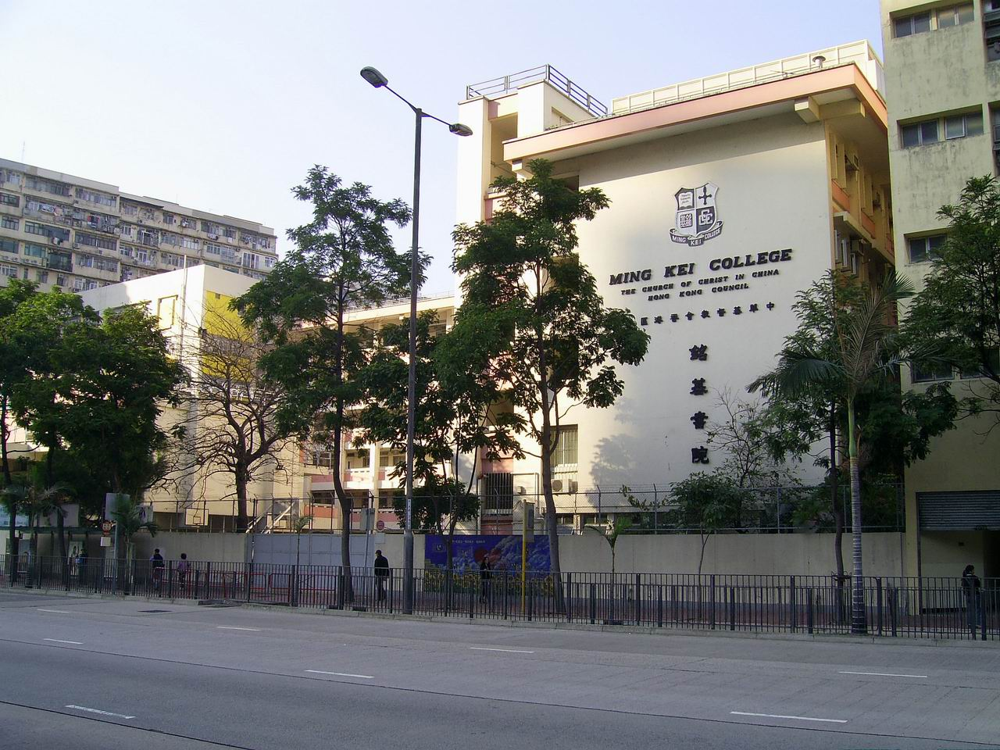
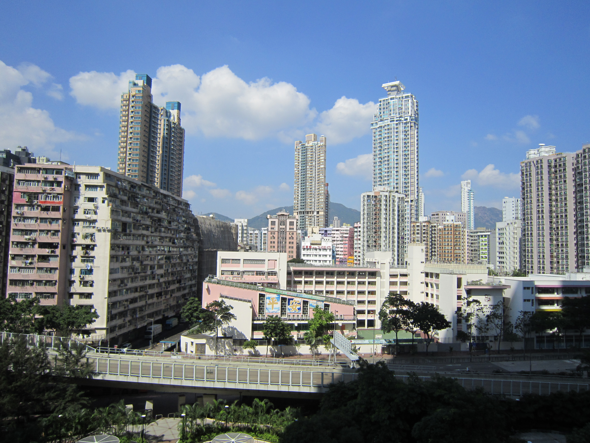
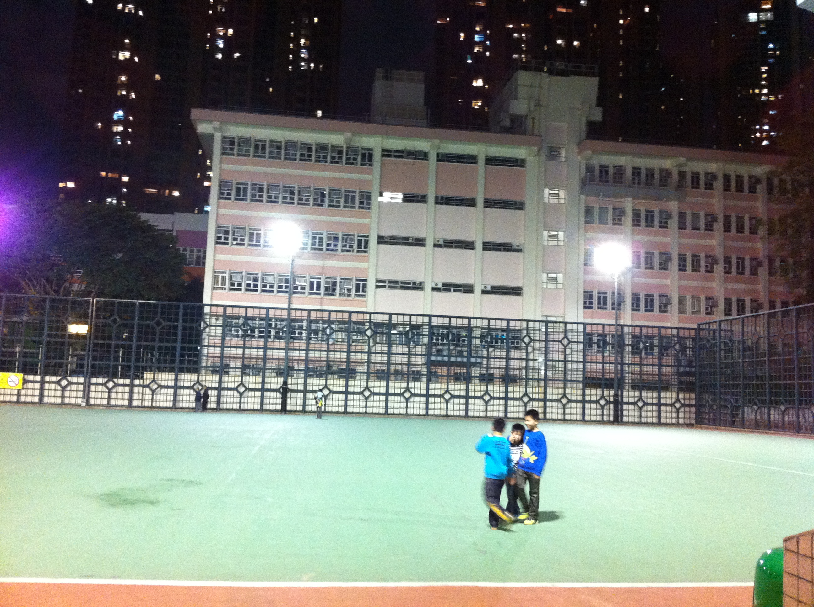
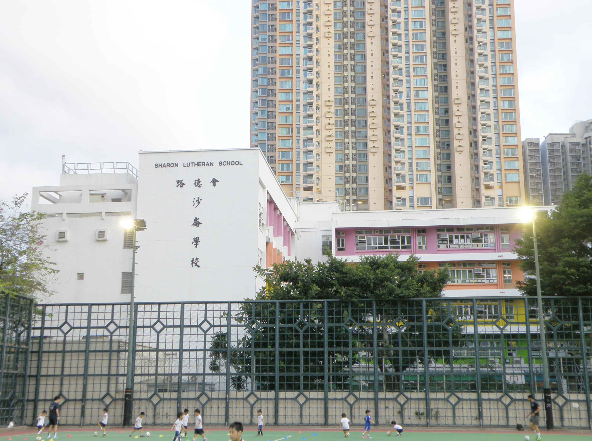
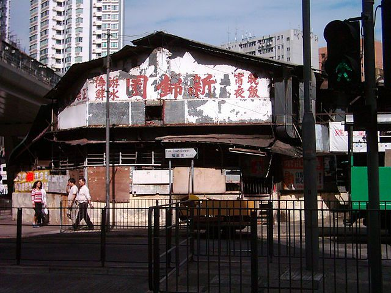

1967 創校中華基督教會銘基書院
CCC Ming Kei College
一九六七年由中華基督教會香港區會創辦，初時借用石硤尾銘賢書院校舍上課，一九六九年一月二十九日正式遷入大角咀橡樹街現址。一直以英文為主要教學語言，校訓係「施比受更為有福」。
由七十年代到而家，一個社區嘅褪色與重生


大角咀原本係九龍半島西部向南伸出嘅一個海岬，因為地形似一隻角插入維多利亞港而得名。一九二八年政府開發大角咀，原有嘅塘尾村同福全鄉拆卸，洪聖廟遷往福全街現址。
五十年代開始，大角咀成為工業同住宅混合區，船塢、五金工場、製衣廠林立。七十年代大同船塢重建成大同新邨；一九七二年大角咀碼頭啟用，開辦來往中環嘅渡輪航線。八十年代工業北移，區內慢慢轉型。
九十年代西九龍填海工程展開，大角咀碼頭被填平，奧運站出現，維港灣、奧海城相繼落成。今日嘅大角咀，一邊係舊唐樓、五金舖、老牌茶餐廳，另一邊係新商廈同大型屋苑，新舊交融，仍然充滿生活氣息。
大同船塢改建為大同新邨，大角咀碼頭喺一九七二年啟用，由油麻地小輪開辦中環至大角咀航線。區內仍然保留船務相關產業，五金舖同機器維修舖成行成市。
隨著人口老化同工業北移，唔少工廠遷出，改建成商業大廈。麗華戲院、金冠戲院等娛樂場所見證咗區內居民嘅休閒生活。
西九龍填海工程為大角咀帶來大幅土地。大角咀碼頭喺一九九二年停用，巴士總站用到一九九五年。奧運站喺一九九八年通車，上蓋物業發展改變咗區內面貌。
大型屋苑、商廈同商場林立，同時舊區仍然保留車房、五金舖、大牌檔同老牌茶餐廳。年輕一代開設嘅文青小店同老牌食肆並存，形成獨特嘅社區風景。
大角咀有多間歷史悠久嘅學校，培育咗幾代街坊。晏架街遊樂場嘅足球場，更加係不少學生放學後嘅戰場。

1967 創校CCC Ming Kei College
一九六七年由中華基督教會香港區會創辦，初時借用石硤尾銘賢書院校舍上課，一九六九年一月二十九日正式遷入大角咀橡樹街現址。一直以英文為主要教學語言，校訓係「施比受更為有福」。

路德會Sharon Lutheran School
位於大角咀嘅路德會小學，服務區內街坊多年。從晏架街遊樂場望過去，可以見到學校校舍，同銘基書院、足球場構成一幅典型嘅大角咀社區圖景。
CCC Kei Chun Primary School
中華基督教會香港區會屬下小學，位於大角咀舊區，服務區內小學校網多年，係不少大角咀街坊嘅母校。
Anchor Street Playground Soccer Pitch
晏架街一帶原本係港口，船隻喺度拋錨停泊，英文名 Anchor Street 就係「錨」嘅意思。今日嘅晏架街遊樂場設有七人硬地足球場、籃球場同兒童遊樂設施，係街坊日常運動同學生放學後踢球嘅地方。夜晚燈光亮起，足球場同旁邊嘅學校互相映襯，成為大角咀獨有嘅風景。
大角咀嘅生活記憶，離不開戲院嘅霓虹、碼頭嘅汽笛聲，同街邊大牌檔嘅鑊氣。
大角咀老街坊熟悉嘅冰室，保留咗舊式港式茶餐廳嘅格局同味道。呢類小店係社區嘅日常風景，亦係大角咀人情味嘅縮影。

大牌檔係香港街頭飲食文化嘅重要標誌。區內曾經有多個露天熟食檔，售賣粥粉麵飯同各式小食，係工人同街坊嘅平價飯堂。
Mayfair Theatre
坐落喺大角咀道同旺角道交界附近，昔日主要放映台灣片。戲院結業後原址改建為麗華商場，但附近街坊仍然記得佢曾經嘅光影。
大角咀另一間陪伴街坊成長嘅戲院。同麗華戲院一樣，見證咗大角咀由工業社區轉型為商住混合區嘅過程。
Tai Kok Tsui Pier
一九七二年四月二十三日啟用，取代旺角碼頭，由油麻地小輪開辦中環至大角咀航線。一九七八年至一九八八年間更開辦多條中港客運航線。一九九二年因西九龍填海停用，原址大約係今日港鐵奧運站附近。
大角咀舊式酒樓之一，係街坊飲茶、擺酒同家庭聚會嘅地方。舊式酒樓承載咗幾代人嘅節日記憶。
區內老牌酒樓，見證咗大角咀飲食業由傳統酒樓年代過渡到今日多元化餐飲嘅變化。
同樣係大角咀舊式酒樓嘅代表，係區內居民日常生活中重要嘅社交同飲食場所。
Fu Tor Loy Centre / Fu Tor Loy Sun Chuen
富多來新邨位於櫸樹街，第一期一九八〇年落成，當時南面仍然係海旁，可以眺望油麻地避風塘同維港景色。隨著填海發展，今日富多來中心已成為大角咀舊區嘅商住地標之一。
中匯街一帶以「中」字命名嘅樓宇，同必發道、必發大廈，都係大角咀居住史嘅重要註腳。
中匯街一帶有唔少以「中」字頭命名嘅樓宇，例如中耀樓、中堅樓、中原樓等。據老街坊憶述，七十年代初中耀樓外仍然係海邊，搬運工人喺度上落貨，小販售賣生腸、炒螺等小食，充滿庶民氣息。
同樣以「中」字命名嘅舊樓，反映咗當年開發商對樓宇命名嘅一貫風格，亦係大角咀舊區建築群嘅一部分。
必發道一帶係大角咀工業同住宅交匯嘅區域。街道名取「必定發達」之意，今日仍然保留唔少工業大廈同商住混合樓宇。
晏架街遊樂場夜景，後方可見銘基書院校舍。
今日晏架街一帶仍然係街坊日常活動嘅核心，周邊舊樓同新廈並存。
大角咀嘅變遷從來唔係簡單嘅「新舊交替」，而係同一條街上，舊式五金舖同文青咖啡店並存，舊樓群同高層商廈互相對望。呢種 mix & match，正正係大角咀最迷人嘅地方。
「在同一條街上，可以看見很舊的矮樓房，而仰望天空又可見新落成的高樓大廈。」
—— 社區攝影師 Woody